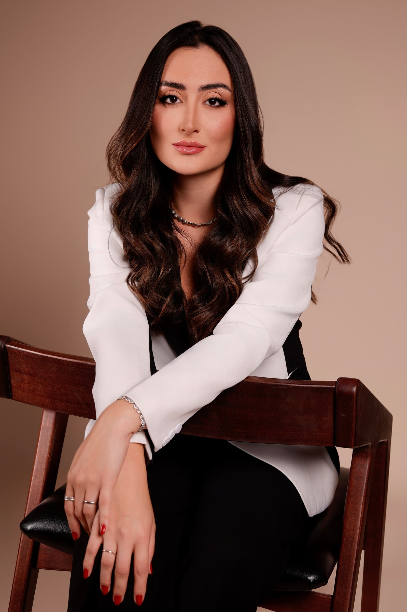
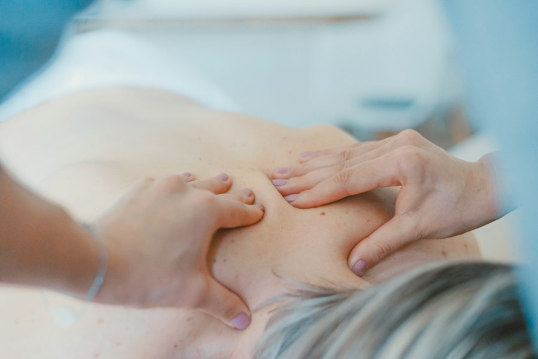
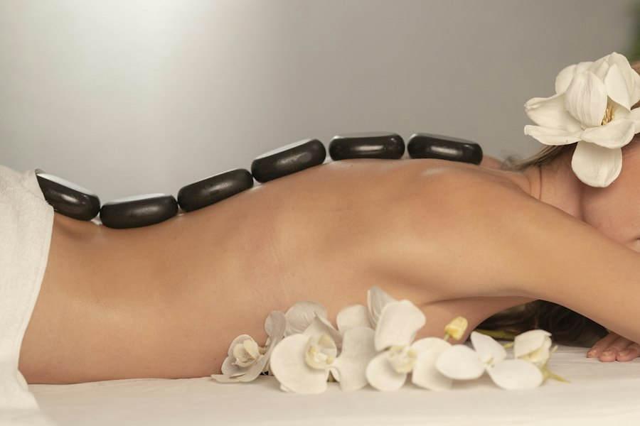
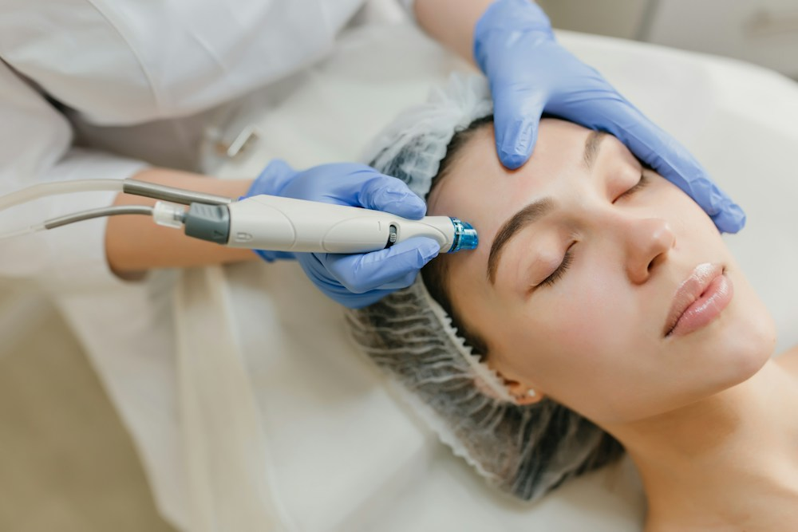
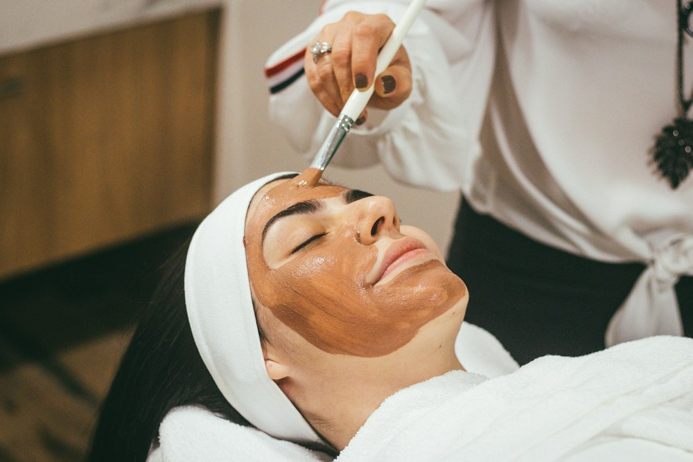
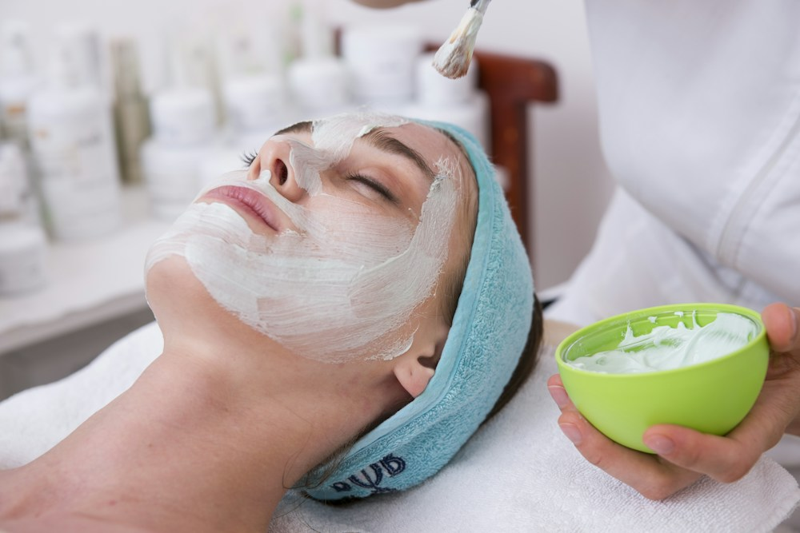

01
Harmonização facial & perfiloplastia
Equilíbrio de traços, proporções, simetria e sustentação facial com naturalidade.
Saber mais ↗Estética avançada em Belo Horizonte
Tratamentos personalizados que respeitam suas proporções, sua identidade e a beleza da sua história.

Beleza • identidade • confiança
01 — Filosofia
“O melhor procedimento é aquele que ninguém percebe. Apenas notam que você está mais bonita e confiante.”
Cada plano nasce de uma escuta atenta e combina conhecimento anatômico, tecnologias avançadas e técnicas modernas.
02 — Sobre mim
Seja bem-vinda, eu sou
Biomédica esteta e especialista em estética avançada. Minha abordagem une ciência, técnica e sensibilidade para valorizar a beleza natural e a individualidade de cada paciente.
Acredito que estética de excelência não transforma rostos: realça o que cada pessoa tem de mais bonito, respeitando proporções, identidade e história.
03 — Procedimentos
Protocolos desenhados após avaliação, com indicação responsável e foco em resultados elegantes e progressivos.
Equilíbrio de traços, proporções, simetria e sustentação facial com naturalidade.
Saber mais ↗
Ativos e tecnologias que estimulam renovação celular, colágeno, firmeza e textura.
Saber mais ↗
Estímulo natural de colágeno para devolver sustentação, firmeza e viço à pele.
Saber mais ↗
Suavização de rugas e linhas de expressão preservando a naturalidade do rosto.
Saber mais ↗
Renovação celular, uniformização da pele e melhora de manchas e poros dilatados.
Saber mais ↗
Ultrassom micro e macrofocado para lifting e melhora da flacidez sem cirurgia.
Saber mais ↗04 — Sua experiência
Entender você, sua história e o que deseja realçar.
Um protocolo individual, transparente e seguro.
Cuidado próximo em cada etapa da sua evolução.
05 — Agendamento
Escolha a unidade e converse com a equipe pelo WhatsApp para encontrar o melhor horário.
Agendar pelo WhatsAppAv. Raja Gabaglia, 1011
Sala 401 · Luxemburgo
Belo Horizonte — MG
Rua Itajubá, 340
Floresta
Belo Horizonte — MG